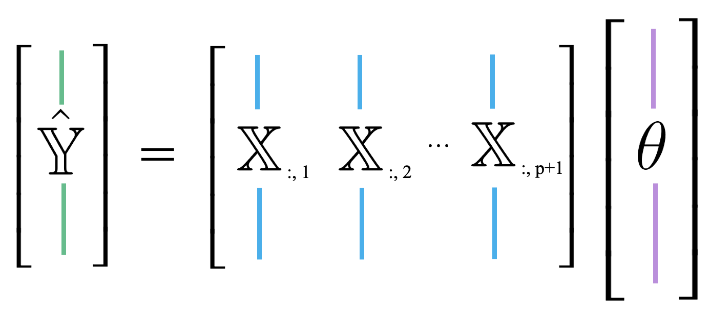

12 Ordinary Least Squares
We’ve now spent a number of lectures exploring how to build effective models – we introduced the SLR and constant models, selected cost functions to suit our modeling task, and applied transformations to improve the linear fit.
Throughout all of this, we considered models of one feature (\(\hat{y}_i = \theta_0 + \theta_1 x_i\)) or zero features (\(\hat{y}_i = \theta\)). As data scientists, we usually have access to datasets containing many features. To make the best models we can, it will be beneficial to consider all of the variables available to us as inputs to a model, rather than just one. In today’s lecture, we’ll introduce multiple Linear regression as a framework to incorporate multiple features into a model. We will also learn how to accelerate the modeling process – specifically, we’ll see how linear algebra offers us a powerful set of tools for understanding model performance.
12.1 Linearity
An expression is linear in \(\theta\) (a set of parameters) if it is a linear combination of the elements of the set. Checking if an expression can separate into a matrix product of two terms: a vector of \(\theta\) s, and a matrix/vector not involving \(\theta\).
Example: \(\theta = [\theta_1, \theta_2, ... \theta_p]\)
- Linear in theta: \(\hat{y} = \theta_0 + 2\theta_1 + 3\theta_2\)
\[\hat{y} = \begin{bmatrix} 1 \space 2 \space 3 \end{bmatrix} \begin{bmatrix} \theta_0 \\ \theta_1 \\ \theta_2 \end{bmatrix}\]
- Not linear in theta: \(\hat{y} = \theta_0\theta_1 + 2\theta_1^2 + 3log(\theta_2)\)
12.2 Multiple Linear Regression
Multiple Linear regression is an extension of simple linear regression that adds additional features into the model. Say we collect information on several variables when making an observation. For example, we may record the age, height, and weekly hours of sleep for a student in Data 100. This single observation now contains data for multiple features. To accommodate for the fact that we now consider several feature variables, we’ll adjust our notation slightly. Each observation can now be thought of as a row vector with an entry for each of \(p\) features.

The multiple Linear regression model takes the form:
\[\hat{y}_i = \theta_0\:+\:\theta_1x_{i1}\:+\:\theta_2 x_{i2}\:+\:...\:+\:\theta_p x_{ip}\]
Our \(i\)th prediction, \(\hat{y}_i\), is a linear combination of the parameters, \(\theta_i\). Because we are now dealing with many parameter values, we’ll collect them all into a parameter vector with dimensions \((p+1) \times 1\) to keep things tidy.
\[\theta = \begin{bmatrix} \theta_{0} \\ \theta_{1} \\ \vdots \\ \theta_{p} \end{bmatrix}\]
We are now working with two vectors: a row vector representing the observed data, and a column vector containing the model parameters. The multiple Linear regression model given above is equivalent to the dot (scalar) product of the observation vector and parameter vector.
\[[1,\:x_{i1},\:x_{i2},\:x_{i3},\:...,\:x_{ip}] \theta = [1,\:x_{i1},\:x_{i2},\:x_{i3},\:...,\:x_{ip}] \begin{bmatrix} \theta_{0} \\ \theta_{1} \\ \vdots \\ \theta_{p} \end{bmatrix} = \theta_0\:+\:\theta_1x_{i1}\:+\:\theta_2 x_{i2}\:+\:...\:+\:\theta_p x_{ip}\]
Notice that we have inserted 1 as the first value in the observation vector. When the dot product is computed, this 1 will be multiplied with \(\theta_0\) to give the intercept of the regression model. We call this 1 entry the intercept or bias term.
12.3 Linear Algebra Approach
We now know how to generate a single prediction from multiple observed features. Data scientists usually work at scale – that is, they want to build models that can produce many predictions, all at once. The vector notation we introduced above gives us a hint on how we can expedite multiple Linear regression. We want to use the tools of linear algebra.
Let’s think carefully about what we did to generate the single prediction above. To make a prediction from the first observation in the data, we took the scalar product of the parameter vector and first observation vector. To make a prediction from the second observation, we would repeat this process to find the scalar product of the parameter vector and the second observation vector. If we wanted to find the model predictions for each observation in the dataset, we’d repeat this process for all \(n\) observations in the data.
\[\hat{y}_1 = [1,\:x_{11},\:x_{12},\:x_{13},\:...,\:x_{1p}] \theta\] \[\hat{y}_2 = [1,\:x_{21},\:x_{22},\:x_{23},\:...,\:x_{2p}] \theta\] \[\vdots\] \[\hat{y}_n = [1,\:x_{n1},\:x_{n2},\:x_{n3},\:...,\:x_{np}] \theta\]
Our observed data is represented by \(n\) row vectors, each with dimension \((p+1)\). We can collect them all into a single matrix, which we call \(\mathbb{X}\).

The matrix \(\mathbb{X}\) is known as the design matrix. It contains all observed data for each of our \(p\) features. It often (but not always) contains an additional column of all ones to represent the intercept or bias column.
To review what is happening in the design matrix: each row represents a single observation. For example, a student in Data 100. Each column represents a feature. For example, the ages of students in Data 100. This convention allows us to easily transfer our previous work in DataFrames over to this new linear algebra perspective.

The multiple Linear regression model can then be restated in terms of matrices: \[\mathbb{\hat{Y}} = \mathbb{X} \theta\]
Here, \(\mathbb{\hat{Y}}\) is the prediction vector with dimensions \((n \times 1)\). It contains the prediction made by the model for each of \(n\) input observations.
We now have a new approach to understanding models in terms of vectors and matrices. To accompany this new convention, we should update our understanding of cost functions and model fitting.
Recall our definition of MSE: \[R(\theta) = \frac{1}{n} \sum_{i=1}^n (y_i - \hat{y}_i)^2\]
At its heart, the MSE is a measure of distance – it gives an indication of how “far away” the predictions are from the true values, on average.
When working with vectors, this idea of “distance” is represented by the norm. More precisely, the distance between two vectors \(\vec{a}\) and \(\vec{b}\) can be expressed as: \[||\vec{a} - \vec{b}||_2 = \sqrt{(a_1 - b_1)^2 + (a_2 - b_2)^2 + \ldots + (a_n - b_n)^2} = \sqrt{\sum_{i=1}^n (a_i - b_i)^2}\]
The double bars are mathematical notation for the norm. The subscript 2 indicates that we are computing the L2, or squared norm.
Looks pretty familiar! We can rewrite the MSE to express it as a squared L2 norm in terms of the prediction vector, \(\hat{\mathbb{Y}}\), and true target vector, \(\mathbb{Y}\):
\[R(\theta) = \frac{1}{n} \sum_{i=1}^n (y_i - \hat{y}_i)^2 = \frac{1}{n} ||\mathbb{Y} - \hat{\mathbb{Y}}||_2^2\]
Here, the superscript 2 outside of the norm double bars means that we are squaring the norm. If we plug in our linear model \(\hat{\mathbb{Y}} = \mathbb{X} \theta\), we find the MSE cost function in vector notation:
\[R(\theta) = \frac{1}{n} ||\mathbb{Y} - \mathbb{X} \theta||_2^2\]
Under the linear algebra perspective, our new task is to fit the optimal parameter vector \(\theta\) such that the cost function is minimized. Equivalently, we wish to minimize the norm \[||\mathbb{Y} - \mathbb{X} \theta||_2 = ||\mathbb{Y} - \hat{\mathbb{Y}}||_2\].
We can restate this goal in two ways:
- Minimize the distance between the vector of true values, \(\mathbb{Y}\), and the vector of predicted values, \(\mathbb{\hat{Y}}\)
- Minimize the length of the residual vector, defined as: \[e = \mathbb{Y} - \mathbb{\hat{Y}} = \begin{bmatrix} y_1 - \hat{y}_1 \\ y_2 - \hat{y}_2 \\ \vdots \\ y_n - \hat{y}_n \end{bmatrix}\]
12.4 Geometric Perspective
To derive the best parameter vector to meet this goal, we can turn to the geometric properties of our modeling set-up.
Up until now, we’ve mostly thought of our model as a scalar product between horizontally-stacked observations and the parameter vector. We can also think of \(\hat{\mathbb{Y}}\) as a linear combination of feature vectors, scaled by the parameters. We use the notation \(\mathbb{X}_{:, i}\) to denote the \(i\)th column of the design matrix. You can think of this as following the same convention as used when calling .iloc and .loc. “:” means that we are taking all entries in the \(i\)th column.

\[ \hat{\mathbb{Y}} = \theta_0 \begin{bmatrix} 1 \\ 1 \\ \vdots \\ 1 \end{bmatrix} + \theta_1 \begin{bmatrix} x_{11} \\ x_{21} \\ \vdots \\ x_{n1} \end{bmatrix} + \ldots + \theta_p \begin{bmatrix} x_{1p} \\ x_{2p} \\ \vdots \\ x_{np} \end{bmatrix} = \theta_0 \mathbb{X}_{:,\:1} + \theta_1 \mathbb{X}_{:,\:2} + \ldots + \theta_p \mathbb{X}_{:,\:p+1}\]
This new approach is useful because it allows us to take advantage of the properties of linear combinations.
Recall that the span or column space of a matrix is the set of all possible linear combinations of the matrix’s columns. In other words, the span represents every point in space that could possibly be reached by adding and scaling some combination of the matrix columns.
Because the prediction vector, \(\hat{\mathbb{Y}} = \mathbb{X} \theta\), is a linear combination of the columns of \(\mathbb{X}\), we know that the predictions are contained in the span of \(\mathbb{X}\). That is, we know that \(\mathbb{\hat{Y}} \in \text{Span}(\mathbb{X})\).
The diagram below is a simplified view of \(\text{Span}(\mathbb{X})\), assuminh that each column of \(\mathbb{X}\) has length \(n\). Notice that the columns of \(\mathbb{X}\) define a subspace of \(\mathbb{R}^n\), where each point in the subspace can be reached by a linear combination of \(\mathbb{X}\)’s columns. The prediction vector \(\mathbb{\hat{Y}}\) lies somewhere in this subspace.
Examining this diagram, we find a problem. The vector of true values, \(\mathbb{Y}\), could theoretically lie anywhere in \(\mathbb{R}^n\) space – its exact location depends on the data we collect out in the real world. However, our multiple Linear regression model can only make predictions in the subspace of \(\mathbb{R}^n\) spanned by \(\mathbb{X}\). Remember the model fitting goal we established in the previous section: we want to generate predictions such that the distance between the vector of true values, \(\mathbb{Y}\), and the vector of predicted values, \(\mathbb{\hat{Y}}\), is minimized. This means that we want \(\mathbb{\hat{Y}}\) to be the vector in \(\text{Span}(\mathbb{X})\) that is closest to \(\mathbb{Y}\).
Another way of rephrasing this goal is to say that we wish to minimize the length of the residual vector \(e\), as measured by its \(L_2\) norm.

The vector in \(\text{Span}(\mathbb{X})\) that is closest to \(\mathbb{Y}\) is always the orthogonal projection of \(\mathbb{Y}\) onto \(\text{Span}(\mathbb{X})\). Thus, we should choose the parameter vector \(\theta\) that makes the residual vector orthogonal to any vector in \(\text{Span}(\mathbb{X})\). You can visualize this as the vector created by dropping a perpendicular line from \(\mathbb{Y}\) onto the span of \(\mathbb{X}\).
How does this help us identify the optimal parameter vector, \(\hat{\theta}\)? Recall that two vectors are orthogonal if their dot product is zero. A vector \(\vec{v}\) is orthogonal to the span of a matrix \(M\) if \(\vec{v}\) is orthogonal to each column in \(M\). Put together, a vector \(\vec{v}\) is orthogonal to \(\text{Span}(M)\) if:
\[M^T \vec{v} = \vec{0}\]
Because our goal is to find \(\hat{\theta}\) such that the residual vector \(e = \mathbb{Y} - \mathbb{X} \theta\) is orthogonal to \(\text{Span}(\mathbb{X})\), we can write:
\[\mathbb{X}^T e = \vec{0}\] \[\mathbb{X}^T (\mathbb{Y} - \mathbb{X}\hat{\theta}) = \vec{0}\] \[\mathbb{X}^T \mathbb{Y} - \mathbb{X}^T \mathbb{X} \hat{\theta} = \vec{0}\] \[\mathbb{X}^T \mathbb{X} \hat{\theta} = \mathbb{X}^T \mathbb{Y}\]
This last line is known as the normal equation. Any vector \(\theta\) that minimizes MSE on a dataset must satisfy this equation.
If \(\mathbb{X}^T \mathbb{X}\) is invertible, we can conclude: \[\hat{\theta} = (\mathbb{X}^T \mathbb{X})^{-1} \mathbb{X}^T \mathbb{Y}\]
This is called the least squares estimate of \(\theta\): it is the value of \(\theta\) that minimizes the squared loss.
Note that the least squares estimate was derived under the assumption that \(\mathbb{X}^T \mathbb{X}\) is invertible. This condition holds true when \(\mathbb{X}^T \mathbb{X}\) is full column rank, which, in turn, happens when \(\mathbb{X}\) is full column rank. We will explore the consequences of this fact in lab and homework.
12.5 Evaluating Model Performance
Our geometric view of multiple Linear regression has taken us far! We have identified the optimal set of parameter values to minimize MSE in a model of multiple features.
Now, we want to understand how well our fitted model performs. One measure of model performance is the Root Mean Squared Error, or RMSE. The RMSE is simply the square root of MSE. Taking the square root converts the value back into the original, non-squared units of \(y_i\), which is useful for understanding the model’s performance. A low RMSE indicates more “accurate” predictions – that there is lower average loss across the dataset.
\[\text{RMSE} = \sqrt{\frac{1}{n} \sum_{i=1}^n (y_i - \hat{y}_i)^2}\]
When working with SLR, we generated plots of the residuals against a single feature to understand the behavior of residuals. When working with several features in multiple Linear regression, it no longer makes sense to consider a single feature in our residual plots. Instead, multiple Linear regression is evaluated by making plots of the residuals against the predicted values. As was the case with SLR, a multiple Linear model performs well if its residual plot shows no patterns.

For SLR, we used the correlation coefficient to capture the association between the target variable and a single feature variable. In a multiple Linear setting, we will need a performance metric that can account for multiple features at once. Multiple \(R^2\), also called the coefficient of determination, is the ratio of the variance of the predicted values \(\hat{y}_i\) to the variance of the true values \(y_i\). It can be interpreted as the proportion of variance in the observations that is explained by the model.
\[R^2 = \frac{\text{variance of } \hat{y}_i}{\text{variance of } y_i} = \frac{\sigma^2_{\hat{y}}}{\sigma^2_y}\]
As we add more features, our fitted values tend to become closer and closer to our actual values. Thus, \(\mathbb{R}^2\) increases.
12.6 OLS Properties
- When using the optimal parameter vector, our residuals \(e = \mathbb{Y} - \hat{\mathbb{Y}}\) are orthogonal to \(span(\mathbb{X})\)
\[\mathbb{X}^Te = 0 \]
- For all linear models with an intercept term, the sum of residuals is zero.
\[\sum_i^n e_i = 0\]
- The Least Squares estimate \(\hat{\theta}\) is unique if and only if \(\mathbb{X}\) is full column rank.